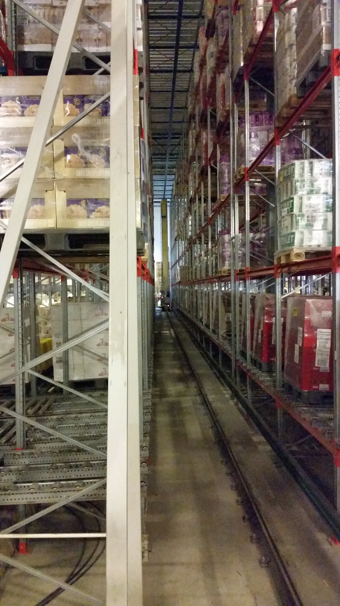
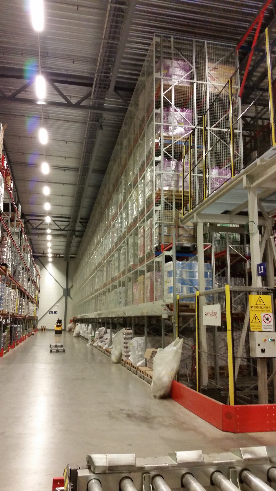
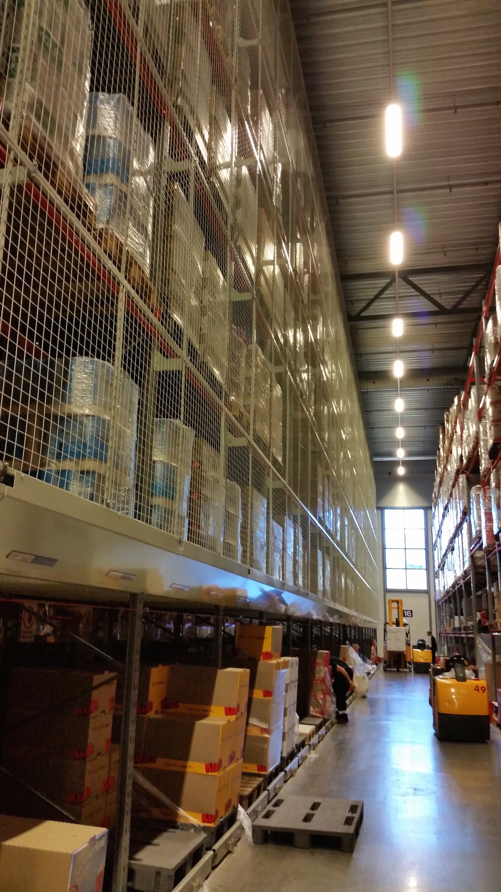
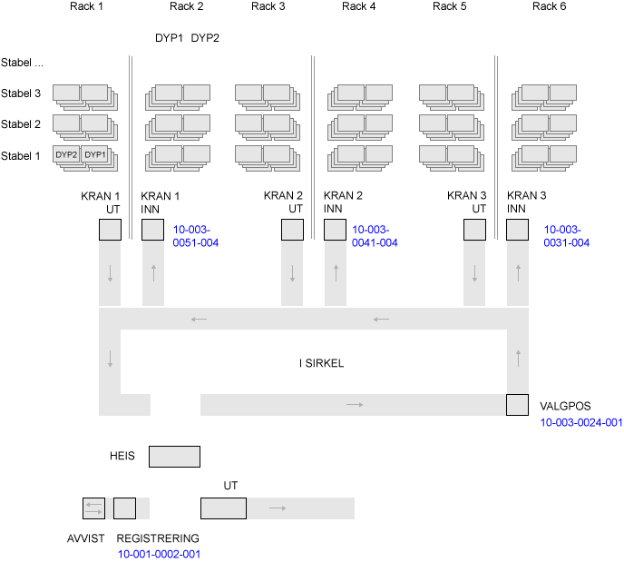
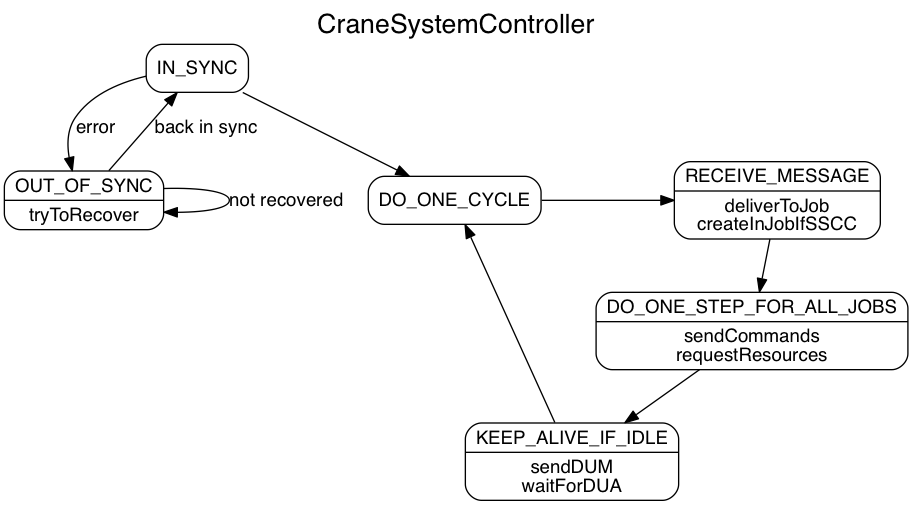
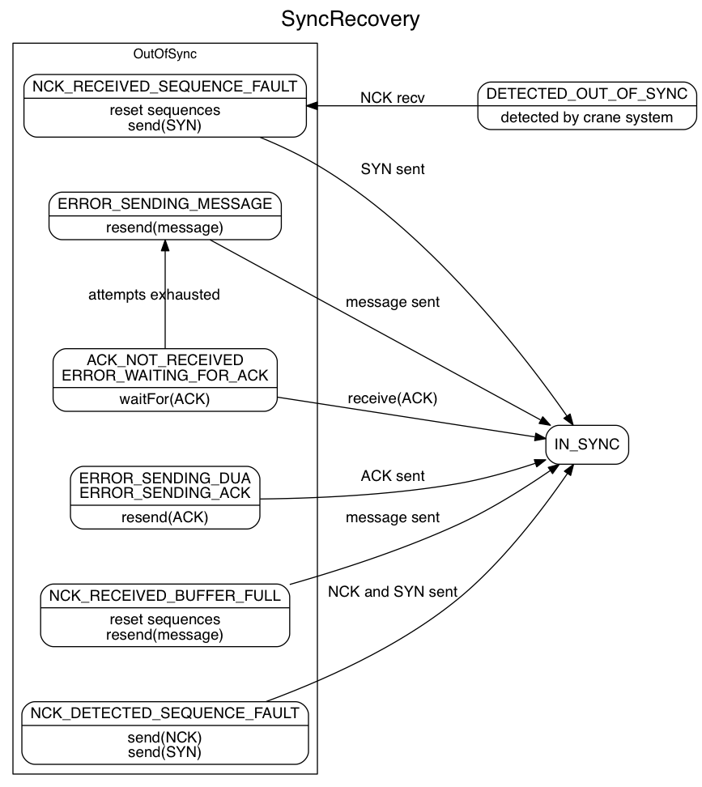
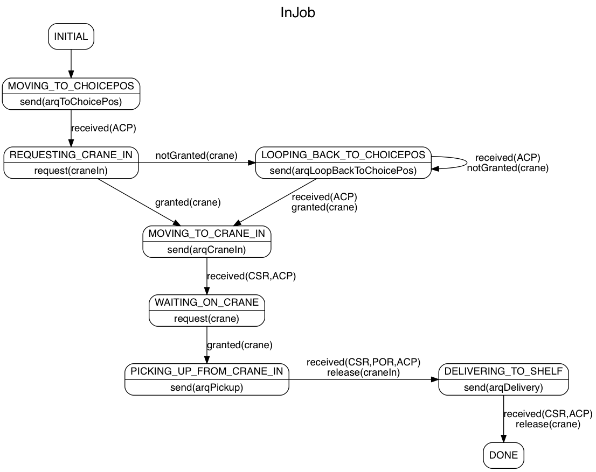
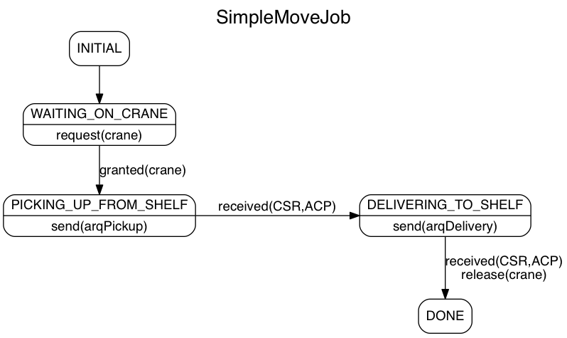
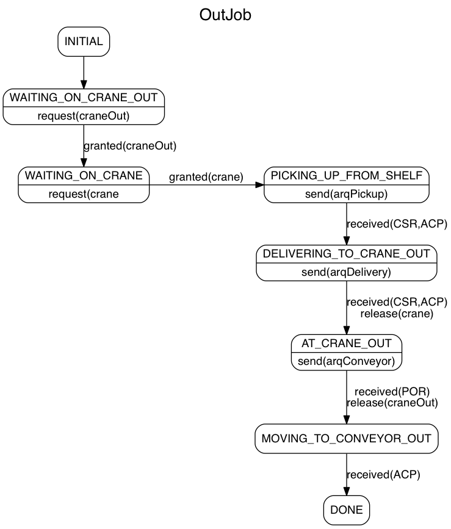
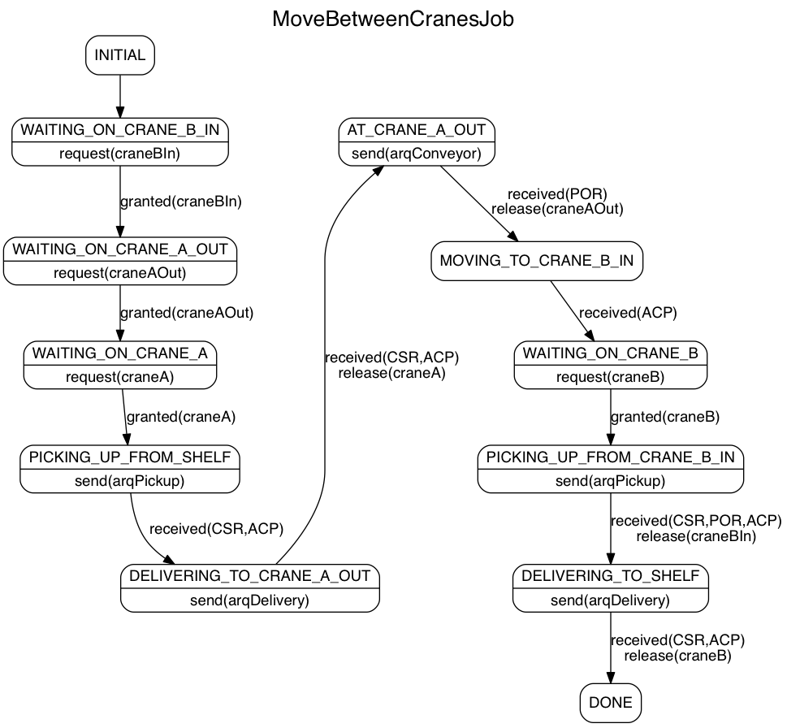

Kranstyring
Mikael Vik / mv@driw.no
Krana
eller kransystemet...
Oppbygging
- Vi kommuniserer med to delsystem
- Conveyor
- Innskanning (frå lageret)
- Heis
- Belte
- Inn og ut av kranene
- Ut-område (til lageret)
- Crane
- Tre kraner
- Hyller for lagring av pallar
- Plukkplassar
REMA Trondheim
.. conveyor-beltet

REMA Trondheim
.. kran, hyller og plukkplassar



Fugleperspektiv?
Wireshark-logging
... faktisk kommunikasjon mellom Sattstore og Swisslog!!
0.000000000 10.244.21.25 10.245.20.65 <18268MOVE01CRAN30ACP0104693753300010150100ULULULUL000000>
0.010393000 10.245.20.65 10.244.21.25 <00000CRAN30MOVE01ACK0826800>
5.294691000 10.245.20.65 10.244.21.25 <00000CON010MOVE01DUM0000000>.................................................................................
5.337090000 10.244.21.25 10.245.20.65 <00000MOVE01CON010DUA0000000>
60.016803000 10.245.20.65 10.244.21.25 <10000CRAN30MOVE01DUM0000000>
60.017539000 10.244.21.25 10.245.20.65 <00000MOVE01CRAN30DUA0000000>
60.216997000 10.244.21.25 10.245.20.65 <00000MOVE01CRAN30DUM0000000>
60.218990000 10.245.20.65 10.244.21.25 <00000CRAN30MOVE01DUA0000000>
60.346877000 10.245.20.65 10.244.21.25 <00000CON010MOVE01DUM0000000>.................................................................................
60.388508000 10.244.21.25 10.245.20.65 <00000MOVE01CON010DUA0000000>
73.274069000 10.244.21.25 10.245.20.65 <19246MOVE01CON010IPR100010002001999999990111111000000011100000000000000000000002000370374003165079702---------
73.355095000 10.245.20.65 10.244.21.25 <00000CON010MOVE01ACK0924600>.................................................................................
73.554521000 10.245.20.65 10.244.21.25 <14764CON010MOVE01ARQ1000100020010469377401100030024001000137037400316507970200>..............................
73.601519000 10.244.21.25 10.245.20.65 <00000MOVE01CON010ACK0476400>
120.225094000 10.245.20.65 10.244.21.25 <10000CRAN30MOVE01DUM0000000>
120.225487000 10.244.21.25 10.245.20.65 <00000MOVE01CRAN30DUA0000000>
126.094575000 10.244.21.25 10.245.20.65 <19247MOVE01CON010IPR100010002001999999990111111000000011100000000000000000000002000370446501059500401---------
126.186385000 10.245.20.65 10.244.21.25 <00000CON010MOVE01ACK0924700>.................................................................................
126.390771000 10.245.20.65 10.244.21.25 <14765CON010MOVE01ARQ1000100020010469377601100030024001000137044650105950040100>..............................
126.422132000 10.244.21.25 10.245.20.65 <00000MOVE01CON010ACK0476500>
128.177015000 10.245.20.65 10.244.21.25 <14106CRAN30MOVE01ARQ0104693777PI01300010290202300020380101REHIFUFU00>
128.197962000 10.244.21.25 10.245.20.65 <00000MOVE01CRAN30ACK0410600>
154.010189000 10.244.21.25 10.245.20.65 <18269MOVE01CRAN30CSR01046937771002902LOLOULUL0100000>
154.024975000 10.245.20.65 10.244.21.25 <00000CRAN30MOVE01ACK0826900>
156.426288000 10.244.21.25 10.245.20.65 <18270MOVE01CRAN30ACP0104693777300010290200LOLOULUL000000>
156.442091000 10.245.20.65 10.244.21.25 <00000CRAN30MOVE01ACK0827000>
156.654247000 10.245.20.65 10.244.21.25 <14107CRAN30MOVE01ARQ0104693777DE01300010290202300020380101REHIFUFU00>
156.671339000 10.244.21.25 10.245.20.65 <00000MOVE01CRAN30ACK0410700>
165.951888000 10.244.21.25 10.245.20.65 <19248MOVE01CON010IPR100010002001999999990111111000000011100000000000000000000002000370446501060100218---------
166.033603000 10.245.20.65 10.244.21.25 <00000CON010MOVE01ACK0924800>.................................................................................
166.232562000 10.245.20.65 10.244.21.25 <14766CON010MOVE01ARQ1000100020010469378006100030024001000137044650106010021800>..............................
166.279329000 10.244.21.25 10.245.20.65 <00000MOVE01CON010ACK0476600>
171.501517000 10.244.21.25 10.245.20.65 <18271MOVE01CRAN30CSR01046937771003801ULULULUL0100000>
171.506061000 10.245.20.65 10.244.21.25 <00000CRAN30MOVE01ACK0827100>
179.721397000 10.244.21.25 10.245.20.65 <18272MOVE01CRAN30ACP0104693777300020380100ULULULUL000000>
179.724837000 10.245.20.65 10.244.21.25 <00000CRAN30MOVE01ACK0827200>
203.422406000 10.244.21.25 10.245.20.65 <19249MOVE01CON010IPR100010002001999999990111111000000011100000000000000000000002000370446501059500395---------
203.466651000 10.245.20.65 10.244.21.25 <00000CON010MOVE01ACK0924900>.................................................................................
203.671800000 10.245.20.65 10.244.21.25 <14767CON010MOVE01ARQ1000100020010469378201100030024001000137044650105950039500>..............................
203.687574000 10.244.21.25 10.245.20.65 <00000MOVE01CON010ACK0476700>
224.029603000 10.244.21.25 10.245.20.65 <19250MOVE01CON010ACP1000300240010469377400000>
224.129346000 10.245.20.65 10.244.21.25 <00000CON010MOVE01ACK0925000>.................................................................................
224.341457000 10.245.20.65 10.244.21.25 <14768CON010MOVE01ARQ1000300240010469377401100030051004000137037400316507970200>..............................
224.419517000 10.244.21.25 10.245.20.65 <00000MOVE01CON010ACK0476800>
239.731837000 10.245.20.65 10.244.21.25 <10000CRAN30MOVE01DUM0000000>
239.732236000 10.244.21.25 10.245.20.65 <00000MOVE01CRAN30DUA0000000>
239.831919000 10.244.21.25 10.245.20.65 <00000MOVE01CRAN30DUM0000000>
239.851739000 10.245.20.65 10.244.21.25 <00000CRAN30MOVE01DUA0000000>
240.612098000 10.244.21.25 10.245.20.65 <19251MOVE01CON010IPR100010002001999999990111111000000011100000000000000000000002000370446501060100201---------
240.656074000 10.245.20.65 10.244.21.25 <00000CON010MOVE01ACK0925100>.................................................................................
240.861561000 10.245.20.65 10.244.21.25 <14769CON010MOVE01ARQ1000100020010469378406100030024001000137044650106010020100>..............................
240.877367000 10.244.21.25 10.245.20.65 <00000MOVE01CON010ACK0476900>
241.267195000 10.244.21.25 10.245.20.65 <19252MOVE01CON010ACP1000300240010469377600000>
Meldingar
- posisjonsbasert format
- sekvens, til, frå, type
- spesialfelt per meldingstype
- sender ack ved mottak
- synk-sjekk vha sekvensar (for alt, ALT!!)
10852CRAN30MOVE01ARQ0204491320PI01300049010001300040070401REHIFUFU00
00000MOVE01CRAN30ACK0085200
10815CON010MOVE01ARQ1000100020010449132401100030024001000137037400316432751400
00000CRAN30MOVE01ACK0081500
11761MOVE01CON010ACP1000300240010449134198700
00000CON010MOVE01ACK0176100
11720MOVE01CRAN30ACP0204491345300040170400DOREMIFA321000
10000CRAN30MOVE01DUM0172000Dei viktigaste meldingstypane
- Til kransystemet
- ARQ (crane): assignment request
- ARQ (conveyor): assignment request
- Frå kransystemet
- IPR: identification point report (sscc har blitt scanna)
- ACP: assignment completed
- CSR: crane status report
- POR: position occupied report
- Tilstandskontroll
- ACK: melding mottatt ok, sendast for (alle) meldingar
- NCK: melding mottatt FEIL
- DUM+DUA: er du der? jada..
- SYN: reset sekvens
Sockets
- lavninvå og upålitelig
- meldingar kan forsvinne
- vanskelig å teste
- kommuniserer med både crane og conveyor
- .. dette må håndterast
- abstrahér det bort
CraneSystemController
- Styrer all kommunikasjon mot krana
- Når alt er ok:
- ta imot meldingar frå krana
- køyr onestep for alle jobbar
- send meldingar
- be om ressursar
- send keep-alive om null aktivitet
- Elles: håndtér feil...
Controller-Flyt
Sync Recovery
Innlagring - Flyt
Innlagring - Kode
defineStates(
state(INITIAL)
.gotoState(MOVING_TO_CHOICEPOS),
state(MOVING_TO_CHOICEPOS)
.onEnter(send(arqToChoicePos()))
.transitionWhen(hasReceived(ACP, CON010))
.transitionTo(REQUESTING_CRANE_IN),
state(REQUESTING_CRANE_IN)
.onEnter(request(craneInAccess))
.withTransitions(
transitionTo(MOVING_TO_CRANE_IN).when(granted(craneInAccess)),
transitionTo(LOOPING_BACK_TO_CHOICEPOS).when(notGranted(craneInAccess))
),
state(LOOPING_BACK_TO_CHOICEPOS)
.onEnter(send(arqLoopBackToChoicePos()))
.transitionWhen(hasReceived(ACP, CON010))
.withTransitions(
transitionTo(MOVING_TO_CRANE_IN).when(granted(craneInAccess)),
transitionTo(LOOPING_BACK_TO_CHOICEPOS).when(notGranted(craneInAccess))
),
state(MOVING_TO_CRANE_IN)
.onEnter(send(arqToCraneIn()))
.transitionWhen(
hasReceived(POR),
hasReceived(ACP, CON010)
)
.transitionTo(WAITING_ON_CRANE),
state(WAITING_ON_CRANE)
.onEnter(request(craneAccess))
.transitionWhen(granted(craneAccess))
.transitionTo(PICKING_UP_FROM_CRANE_IN),
state(PICKING_UP_FROM_CRANE_IN)
.onEnter(send(arqPickupFromCrane()))
.transitionWhen(
hasReceived(CSR),
hasReceived(POR),
hasReceived(ACP, CRAN30)
)
.onTransition(release(craneInAccess))
.transitionTo(DELIVERING_TO_SHELF),
state(DELIVERING_TO_SHELF)
.onEnter(send(arqDeliverToShelf()))
.transitionWhen(
hasReceived(CSR),
hasReceived(ACP, CRAN30)
)
.onTransition(release(craneAccess))
.transitionTo(DONE),
state(DONE).endState()
);
Flytdiagram for andre jobbar...
Flytting (éi kran)
Flytting - Kode
defineStates(
state(INITIAL)
.gotoState(WAITING_ON_CRANE),
state(WAITING_ON_CRANE)
.onEnter(request(craneAccess))
.transitionWhen(granted(craneAccess))
.transitionTo(PICKING_UP_FROM_SHELF),
state(PICKING_UP_FROM_SHELF)
.onEnter(send(arqPickupFromShelf()))
.transitionWhen(
hasReceived(CSR),
hasReceived(ACP)
)
.transitionTo(DELIVERING_TO_SHELF),
state(DELIVERING_TO_SHELF)
.onEnter(send(arqDeliverToShelf()))
.transitionWhen(
hasReceived(CSR),
hasReceived(ACP, CRAN30)
)
.onTransition(release(craneAccess))
.gotoState(DONE),
state(DONE).endState()
); Utlagring
Flytting (mellom kraner)
DOT-language...
... digg å generé flytdiagram med kode
digraph controller {
label="CraneSystemController";
1 [label="{DO_ONE_CYCLE}"];
2 [label="{RECEIVE_MESSAGE|deliverToJob\ncreateInJobIfSSCC}"];
3 [label="{DO_ONE_STEP_FOR_ALL_JOBS|sendCommands\nrequestResources}"];
4 [label="{KEEP_ALIVE_IF_IDLE|sendDUM\nwaitForDUA}"];
A [label="{OUT_OF_SYNC|tryToRecover}"];
0 [label="{IN_SYNC}"];
0->1;
0->A [label="error"];
A->A [label="not recovered"];
A->0 [label="back in sync"];
1->2
2->3
3->4
4->1
{rank=same;1 2};
} Testing
“Mo code mo problems”- Notorious B.I.G.
Enhetstestar
“TDD!! TDD!! TDD!!”
- Testane dokumenterer koda
- Ka koda gjer er viktigare enn korleis
- Mest mulig black-box
- data inn -> data ut
- Trygghet
- koda gjer det den skal
- få det til å funke
- gjer det forståelig (refaktorér)
- Øyeblikkelig tilbakemelding...
- Ei hjelp til å endre, IKKJE ET HINDER
Rein gevinst
- Prosjektet starta med begrensa informasjon
- Vi oppdaga underveis at antakelsar var feil
- Mulig å gjere endringar med liten risiko
“Turn and face the strange. Ch-ch-changes.”- David Bowie
Testkode-eksempel
@Test
public void shouldPerformInJobSuccessfully() {
assertMovingToState(job, MOVING_TO_CHOICEPOS, ARQConveyorCommand.class);
assertReceiveIn(job, acpConveyorAt(CHOICE_LOC));
assertMovingToState(job, REQUESTING_CRANE_IN);
CraneAccessRequest craneInAccess = assertAndGrantRequest(job);
assertMovingToState(job, MOVING_TO_CRANE_IN, ARQConveyorCommand.class);
assertReceiveIn(job, porAt(CRANE_1_IN, 1));
assertReceiveIn(job, acpConveyorAt(CRANE_1_IN));
CraneAccessRequest craneAccess = assertMovingToState(job, WAITING_ON_CRANE, CRANE);
craneAccess.grant();
assertMovingToState(job, PICKING_UP_FROM_CRANE_IN, ARQCraneCommand.class);
assertReceiveIn(job, csr());
assertReceiveIn(job, porAt(CRANE_1_IN, 0));
assertReceiveIn(job, acpCrane());
assertMovingToState(job, DELIVERING_TO_SHELF, ARQCraneCommand.class);
assertThat(craneInAccess.getState(), is(RELEASED));
assertReceiveIn(job, csr());
assertReceiveIn(job, acpCrane());
assertMovingToState(job, DONE);
assertThat(craneAccess.getState(), is(RELEASED));
} Kankje berre teste...
Kode...
- Få det til å funke
- Refaktorér
- Lesbarhet is King Kong
- .. du les meir kode enn du skriv
- testane passar på at du ikkje innfører NYE feil
- Spørr en venn!
- Kodegjennomgang
- Parprogrammering
Simulator
“Enhetstestar bekreftar at du har skrive koda rett,
akseptansetestar bekreftar at du har skrive rett kode”
“Can test this”- MC Hammer
Koffør koffør koffør?
- Swisslog hadde ikkje nåke å tilby..
- usikker på socket-kommunikasjon
- enhetstestar kan kun hjelpe et stykke på veien
- valgte Python
- mindre fare for at kran-koda kun funka mot Java-kode
- kjapt å komme igang
- kan det, lika det
- og koffør kun snakke Java lizzom...
- Kun brukt for manuell testing
Demo
Dypdykk i kode
No blir det teknisk...